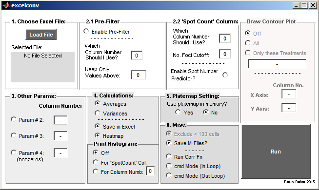

% Name: excelconv.m; GUI frontend for excelvconv_bend.m % Function: Front-end for excelconv_bend. Reads in and analyzes cellomics excel files. Can be used to filter any excel sheet with headers. % Dependencies: excelconv_bend.m, pmap_ed.m, pmap_ed.fig, superscat.m, corr_bend.m (optional), corr_fe.m/corr_fe.fig (optional) % Author: Dhruv Raina % Last Edit: 201015 function varargout = excelconv(varargin) % EXCELCONV M-file for excelconv.fig % EXCELCONV, by itself, creates a new EXCELCONV or raises the existing % singleton*. % % H = EXCELCONV returns the handle to a new EXCELCONV or the handle to % the existing singleton*. % % EXCELCONV('CALLBACK',hObject,eventData,handles,...) calls the local % function named CALLBACK in EXCELCONV.M with the given input arguments. % % EXCELCONV('Property','Value',...) creates a new EXCELCONV or raises the % existing singleton*. Starting from the left, property value pairs are % applied to the GUI before excelconv_OpeningFcn gets called. An % unrecognized property name or invalid value makes property application % stop. All inputs are passed to excelconv_OpeningFcn via varargin. % % *See GUI Options on GUIDE's Tools menu. Choose "GUI allows only one % instance to run (singleton)". % % See also: GUIDE, GUIDATA, GUIHANDLES % Edit the above text to modify the response to help excelconv % Last Modified by GUIDE v2.5 30-Nov-2015 12:43:48 % Begin initialization code - DO NOT EDIT gui_Singleton = 1; gui_State = struct('gui_Name', mfilename, ... 'gui_Singleton', gui_Singleton, ... 'gui_OpeningFcn', @excelconv_OpeningFcn, ... 'gui_OutputFcn', @excelconv_OutputFcn, ... 'gui_LayoutFcn', [] , ... 'gui_Callback', []); if nargin && ischar(varargin{1}) gui_State.gui_Callback = str2func(varargin{1}); end if nargout [varargout{1:nargout}] = gui_mainfcn(gui_State, varargin{:}); else gui_mainfcn(gui_State, varargin{:}); end % End initialization code - DO NOT EDIT % --- Executes just before excelconv is made visible. function excelconv_OpeningFcn(hObject, eventdata, handles, varargin) % This function has no output args, see OutputFcn. % hObject handle to figure % eventdata reserved - to be defined in a future version of MATLAB % handles structure with handles and user data (see GUIDATA) % varargin command line arguments to excelconv (see VARARGIN) % Choose default command line output for excelconv handles.output = hObject; handles.OldPath = cd; iniFile = fullfile(handles.OldPath, 'excelconv_ini.mat'); if exist(iniFile, 'file')==2 %If it exists as a file initialValues = load(iniFile); if isfield(initialValues,'lastUsedInFolder') handles.OldPath = initialValues.lastUsedInFolder; %From magicgui.m//matlabcentral.com end end % Update handles structure for default values set(handles.rdbt_avg, 'Value', 1); set(handles.rdbt_heatmap, 'Value', 1); set(handles.rdbt_saveXL, 'Value', 1); set(handles.rbdt_savemat, 'Value', 1);%rbdt, NOT rdbt! :/ set(handles.rdbt_cmdFlag, 'Value', 0); set(handles.rdbt_cmdFlag2, 'Value', 0); set(handles.rdbt_ssOff, 'Value', 1); set(handles.rdbt_exclude, 'Value', 1); set(handles.rdbt_histOff, 'Value', 1); set(handles.rdbt_histCol, 'Value', 0); set(handles.rdbt_std, 'Value', 0);%Note:- This is SpotCount histogram, not STD set(handles.rdbt_exclude, 'Enable', 'off') handles.flag_hist = 0; handles.flag_avg = 1; handles.flag_heatmap = 1; handles.flag_XL = 1; handles.flag_p1 = 0; handles.flag_p2 = 0; handles.flag_p3 = 0; handles.pmapmemflag = 0; handles.spotcol = 0; handles.colp1 = 0; handles.colp2 = 0; handles.colp3 = 0; guidata(hObject, handles); % UIWAIT makes excelconv wait for user response (see UIRESUME) % uiwait(handles.figure1); % --- Outputs from this function are returned to the command line. function varargout = excelconv_OutputFcn(hObject, eventdata, handles) % varargout cell array for returning output args (see VARARGOUT); % hObject handle to figure % eventdata reserved - to be defined in a future version of MATLAB % handles structure with handles and user data (see GUIDATA) % Get default command line output from handles structure varargout{1} = handles.output; % --- Executes on button press in pbt_LoadFile. function pbt_LoadFile_Callback(hObject, eventdata, handles) % LOAD XLS FILE % hObject handle to pbt_LoadFile (see GCBO) % eventdata reserved - to be defined in a future version of MATLAB % handles structure with handles and user data (see GUIDATA) clear returnValue [filename, pathname] = uigetfile({'*.xls;*.xlsx', 'MS Excel Files';'*.*', 'All Files'}, 'Select an MS Excel File', handles.OldPath); if pathname ~= 0 % Assign the value if they didn't click cancel. handles.TestFile = [pathname filename]; handles.TestFile(handles.TestFile=='\')='/'; % Save the image folder in our ini file. lastUsedInFolder = pathname; lastUsedInFolder(lastUsedInFolder=='\')='/'; save('excelconv_ini.mat', 'lastUsedInFolder'); set(handles.tx_FileName, 'String', filename); guidata(hObject, handles); end % ++++++++++++++++++++++++++++++++++++++++++++++++++++++++++++++++++++++++++++++++++++ % --- Executes on button press in pbt_go. function pbt_go_Callback(hObject, eventdata, handles) % RUN % hObject handle to pbt_go (see GCBO) % eventdata reserved - to be defined in a future version of MATLAB % handles structure with handles and user data (see GUIDATA) handles.spotcol = str2double(get(handles.etx_spotcount, 'String')); numfoci = str2double(get(handles.etx_numfoci, 'String')); avFlag = get(handles.rdbt_avg, 'Value'); vaFlag = get(handles.rdbt_var, 'Value'); %Get superimpose scatter params: ss_vars(1) = get(handles.rdbt_ssOff, 'Value'); ss_vars(2) = get(handles.rdbt_ssAll, 'Value'); ss_vars(3) = get(handles.rdbt_ssTreatment, 'Value'); ss_vars = find(ss_vars); switch(ss_vars) case(1) %off SuperScatInputs(1)=1; SuperScatInputs(2)=0; SuperScatInputs(3)=0; case(2) %all treatment IDs SuperScatInputs(1)=2; SuperScatInputs(2)=str2double(get(handles.etx_ssXaxis, 'String')); SuperScatInputs(3)=str2double(get(handles.etx_ssYaxis, 'String')); case (3) %only specific treatment IDs SuperScatInputs(1)=3; SuperScatInputs(2)=str2double(get(handles.etx_ssXaxis, 'String')); SuperScatInputs(3)=str2double(get(handles.etx_ssYaxis, 'String')); ss_tID = get(handles.etx_ssTreatment, 'String'); k = strfind(ss_tID, ','); %Padding the 1st and last position: k = [1, k]; k(end+1)=length(ss_tID); for cc1 = 2:length(k) lastctr = cc1-1; SuperScatInputs(cc1+2) = str2double(ss_tID(k(lastctr):k(cc1))); %note cc1 starts from 2. ss_ID(1)=Superimpose scatter flag. end end %Get 'Other Params' if handles.flag_p1==1 handles.colp1 = str2double(get(handles.etx_param1, 'String')); else handles.colp1 = 0; end if handles.flag_p2==1 handles.colp2 = str2double(get(handles.etx_param2, 'String')); else handles.colp2 = 0; end if handles.flag_p3==1 handles.colp3 = str2double(get(handles.etx_param3, 'String')); else handles.colp3 = 0; end %Get Pre-Filter Values: pf_flag = get(handles.rdbt_pfilt, 'Value'); [pf_col pf_cut] = deal(0); if pf_flag==1 pf_col = str2double(get(handles.etx_pfcol, 'String')); pf_cut = str2double(get(handles.etx_pfcut, 'String')); end pf_inputs(1) = pf_flag; pf_inputs(2) = pf_col; pf_inputs(3) = pf_cut; %Get M-File saveflag matflag = get(handles.rbdt_savemat, 'Value'); %Calculation Inputs: if avFlag == 1 calc_inputs(1) = 1; elseif vaFlag == 1 calc_inputs(1) = 2; else msgbox('Calculating Averages by default... Please toggle the correct calculation box!', 'Excel Converter') disp('Calculating AVERAGES by default, no user input') calc_inputs(1) = 1; end calc_inputs(2) = handles.flag_hist; %Histogram calc_inputs(3) = get(handles.rdbt_heatmap, 'Value'); calc_inputs(4) = handles.flag_XL; calc_inputs(5) = get(handles.rdbt_corr, 'Value'); %Correlation Function %Correlation Fn inputs: if calc_inputs(5)==1 uiwait(corr_fe) delete(corr_fe) %Close corr_fe end %Get cmdMode Flag: calc_inputs(6) = get(handles.rdbt_cmdFlag, 'Value'); %In Loop calc_inputs(7) = get(handles.rdbt_cmdFlag2, 'Value'); %Out of Loop %Get 'Exclude <100 cells from Calculations' flag: flag_exenable = get(handles.rdbt_exclude, 'Enable'); switch flag_exenable case 'off' calc_inputs(8) = 0; case 'on' calc_inputs(8) = get(handles.rdbt_exclude, 'Value'); %Default ON end %Get 'SpotNum Predictor' flag: calc_inputs(9) = get(handles.rdbt_spotnumpred, 'Value'); %Default OFF %Print Histogram: calc_inputs(10) = 0; if handles.flag_hist == 2 calc_inputs(10) = str2double(get(handles.etx_histCol, 'String')); end %Reader Inputs: reader_inputs(1) = handles.spotcol; reader_inputs(2) = handles.colp1; reader_inputs(3) = handles.colp2; reader_inputs(4) = handles.colp3; reader_inputs(5) = numfoci; try excelconv_bend(calc_inputs, reader_inputs, pf_inputs, SuperScatInputs, handles.TestFile, matflag, handles.pmapmemflag); catch errordlg('Input Error: Please Check your Inputs!', 'ExcelConv') end % +++++++++++++++++++++++++++++++++++++++++++++++++++++++++++++++++++++++++ % --- Executes on button press in rdbt_avg. function rdbt_avg_Callback(hObject, eventdata, handles) % hObject handle to rdbt_avg (see GCBO) % eventdata reserved - to be defined in a future version of MATLAB % handles structure with handles and user data (see GUIDATA) %To enable 'switching' behaviour with rdbt_var vaFlag = get(handles.rdbt_var, 'Value'); if vaFlag==1 set(handles.rdbt_var, 'Value', 0); set(handles.rdbt_avg, 'Value', 1); end guidata(hObject, handles) % --- Executes on button press in rdbt_var. function rdbt_var_Callback(hObject, eventdata, handles) % hObject handle to rdbt_var (see GCBO) % eventdata reserved - to be defined in a future version of MATLAB % handles structure with handles and user data (see GUIDATA) %To enable 'switching' behaviour with rdbt_avg avFlag = get(handles.rdbt_avg, 'Value'); if avFlag==1 set(handles.rdbt_avg, 'Value', 0); set(handles.rdbt_var, 'Value', 1); end guidata(hObject, handles) %Histogram Switcher % --- Executes when selected object is changed in uipanel11. function uipanel11_SelectionChangeFcn(hObject, eventdata, handles) % hObject handle to the selected object in uipanel11 % eventdata structure with the following fields (see UIBUTTONGROUP) % EventName: string 'SelectionChanged' (read only) % OldValue: handle of the previously selected object or empty if none was selected % NewValue: handle of the currently selected object % handles structure with handles and user data (see GUIDATA) histflag = get(eventdata.NewValue, 'Tag'); switch histflag case 'rdbt_std' handles.flag_hist = 1; case 'rdbt_histOff' handles.flag_hist = 0; case 'rdbt_histCol' handles.flag_hist = 2; end guidata(hObject, handles) % --- Executes on button press in rdbt_std. function rdbt_std_Callback(hObject, eventdata, handles) % hObject handle to rdbt_std (see GCBO) % eventdata reserved - to be defined in a future version of MATLAB % handles structure with handles and user data (see GUIDATA) % Hint: get(hObject,'Value') returns toggle state of rdbt_std % --- Executes on button press in rdbt_heatmap. function rdbt_heatmap_Callback(hObject, eventdata, handles) % hObject handle to rdbt_heatmap (see GCBO) % eventdata reserved - to be defined in a future version of MATLAB % handles structure with handles and user data (see GUIDATA) % Hint: get(hObject,'Value') returns toggle state of rdbt_heatmap % --- Executes on button press in rdbt_saveXL. function rdbt_saveXL_Callback(hObject, eventdata, handles) % hObject handle to rdbt_saveXL (see GCBO) % eventdata reserved - to be defined in a future version of MATLAB % handles structure with handles and user data (see GUIDATA) % Hint: get(hObject,'Value') returns toggle state of rdbt_saveXL % --- Executes on button press in rdbt_param1. function rdbt_param1_Callback(hObject, eventdata, handles) % hObject handle to rdbt_param1 (see GCBO) % eventdata reserved - to be defined in a future version of MATLAB % handles structure with handles and user data (see GUIDATA) % Hint: get(hObject,'Value') returns toggle state of rdbt_param1 handles.flag_p1 = get(hObject, 'Value'); p1Val = get(handles.rdbt_param1, 'Value'); %Disables the exclude 100 cells option if no columns are selected to be run otherparams(1) = str2double(get(handles.etx_spotcount, 'String')); otherparams(2) = get(handles.rdbt_param2, 'Value'); otherparams(3) = get(handles.rdbt_param3, 'Value'); if sum(otherparams(:))==0 switch p1Val case 0 set(handles.rdbt_exclude, 'Enable', 'Off') otherwise set(handles.rdbt_exclude, 'Enable', 'On') end end guidata(hObject, handles); % --- Executes on button press in rdbt_param2. function rdbt_param2_Callback(hObject, eventdata, handles) % hObject handle to rdbt_param2 (see GCBO) % eventdata reserved - to be defined in a future version of MATLAB % handles structure with handles and user data (see GUIDATA) % Hint: get(hObject,'Value') returns toggle state of rdbt_param2 handles.flag_p2 = get(hObject, 'Value'); p2Val = get(handles.rdbt_param2, 'Value'); %Disables the exclude 100 cells option if no columns are selected to be run otherparams(1) = str2double(get(handles.etx_spotcount, 'String')); otherparams(2) = get(handles.rdbt_param1, 'Value'); otherparams(3) = get(handles.rdbt_param3, 'Value'); if sum(otherparams(:))==0 switch p2Val case 0 set(handles.rdbt_exclude, 'Enable', 'Off') otherwise set(handles.rdbt_exclude, 'Enable', 'On') end end guidata(hObject, handles); % --- Executes on button press in rdbt_param3. function rdbt_param3_Callback(hObject, eventdata, handles) % hObject handle to rdbt_param3 (see GCBO) % eventdata reserved - to be defined in a future version of MATLAB % handles structure with handles and user data (see GUIDATA) % Hint: get(hObject,'Value') returns toggle state of rdbt_param3 handles.flag_p3 = get(hObject, 'Value'); p3Val = get(handles.rdbt_param3, 'Value'); %Disables the exclude 100 cells option if no columns are selected to be run otherparams(1) = str2double(get(handles.etx_spotcount, 'String')); otherparams(2) = get(handles.rdbt_param1, 'Value'); otherparams(3) = get(handles.rdbt_param2, 'Value'); if sum(otherparams(:))==0 switch p3Val case 0 set(handles.rdbt_exclude, 'Enable', 'Off') otherwise set(handles.rdbt_exclude, 'Enable', 'On') end end guidata(hObject, handles); function etx_param1_Callback(hObject, eventdata, handles) % hObject handle to etx_param1 (see GCBO) % eventdata reserved - to be defined in a future version of MATLAB % handles structure with handles and user data (see GUIDATA) % Hints: get(hObject,'String') returns contents of etx_param1 as text % str2double(get(hObject,'String')) returns contents of etx_param1 as a double % --- Executes during object creation, after setting all properties. function etx_param1_CreateFcn(hObject, eventdata, handles) % hObject handle to etx_param1 (see GCBO) % eventdata reserved - to be defined in a future version of MATLAB % handles empty - handles not created until after all CreateFcns called % Hint: edit controls usually have a white background on Windows. % See ISPC and COMPUTER. if ispc && isequal(get(hObject,'BackgroundColor'), get(0,'defaultUicontrolBackgroundColor')) set(hObject,'BackgroundColor','white'); end function etx_param2_Callback(hObject, eventdata, handles) % hObject handle to etx_param2 (see GCBO) % eventdata reserved - to be defined in a future version of MATLAB % handles structure with handles and user data (see GUIDATA) % Hints: get(hObject,'String') returns contents of etx_param2 as text % str2double(get(hObject,'String')) returns contents of etx_param2 as a double % --- Executes during object creation, after setting all properties. function etx_param2_CreateFcn(hObject, eventdata, handles) % hObject handle to etx_param2 (see GCBO) % eventdata reserved - to be defined in a future version of MATLAB % handles empty - handles not created until after all CreateFcns called % Hint: edit controls usually have a white background on Windows. % See ISPC and COMPUTER. if ispc && isequal(get(hObject,'BackgroundColor'), get(0,'defaultUicontrolBackgroundColor')) set(hObject,'BackgroundColor','white'); end function etx_param3_Callback(hObject, eventdata, handles) % hObject handle to etx_param3 (see GCBO) % eventdata reserved - to be defined in a future version of MATLAB % handles structure with handles and user data (see GUIDATA) % Hints: get(hObject,'String') returns contents of etx_param3 as text % str2double(get(hObject,'String')) returns contents of etx_param3 as a double % --- Executes during object creation, after setting all properties. function etx_param3_CreateFcn(hObject, eventdata, handles) % hObject handle to etx_param3 (see GCBO) % eventdata reserved - to be defined in a future version of MATLAB % handles empty - handles not created until after all CreateFcns called % Hint: edit controls usually have a white background on Windows. % See ISPC and COMPUTER. if ispc && isequal(get(hObject,'BackgroundColor'), get(0,'defaultUicontrolBackgroundColor')) set(hObject,'BackgroundColor','white'); end function etx_spotcount_Callback(hObject, eventdata, handles) % hObject handle to etx_spotcount (see GCBO) % eventdata reserved - to be defined in a future version of MATLAB % handles structure with handles and user data (see GUIDATA) % Hints: get(hObject,'String') returns contents of etx_spotcount as text % str2double(get(hObject,'String')) returns contents of etx_spotcount as a double stringval = str2double(get(handles.etx_spotcount, 'String')); %Disables the exclude 100 cells option if no columns are selected to be run otherparams(1) = get(handles.rdbt_param1, 'Value'); otherparams(2) = get(handles.rdbt_param2, 'Value'); otherparams(3) = get(handles.rdbt_param3, 'Value'); if sum(otherparams(:))==0 switch stringval case 0 set(handles.rdbt_exclude, 'Enable', 'Off') otherwise set(handles.rdbt_exclude, 'Enable', 'On') end end guidata(hObject, handles) % --- Executes during object creation, after setting all properties. function etx_spotcount_CreateFcn(hObject, eventdata, handles) % hObject handle to etx_spotcount (see GCBO) % eventdata reserved - to be defined in a future version of MATLAB % handles empty - handles not created until after all CreateFcns called % Hint: edit controls usually have a white background on Windows. % See ISPC and COMPUTER. if ispc && isequal(get(hObject,'BackgroundColor'), get(0,'defaultUicontrolBackgroundColor')) set(hObject,'BackgroundColor','white'); end function etx_numfoci_Callback(hObject, eventdata, handles) % hObject handle to etx_numfoci (see GCBO) % eventdata reserved - to be defined in a future version of MATLAB % handles structure with handles and user data (see GUIDATA) % Hints: get(hObject,'String') returns contents of etx_numfoci as text % str2double(get(hObject,'String')) returns contents of etx_numfoci as a double % --- Executes during object creation, after setting all properties. function etx_numfoci_CreateFcn(hObject, eventdata, handles) % hObject handle to etx_numfoci (see GCBO) % eventdata reserved - to be defined in a future version of MATLAB % handles empty - handles not created until after all CreateFcns called % Hint: edit controls usually have a white background on Windows. % See ISPC and COMPUTER. if ispc && isequal(get(hObject,'BackgroundColor'), get(0,'defaultUicontrolBackgroundColor')) set(hObject,'BackgroundColor','white'); end % --- Executes on button press in rdbt_pfilt. function rdbt_pfilt_Callback(hObject, eventdata, handles) % hObject handle to rdbt_pfilt (see GCBO) % eventdata reserved - to be defined in a future version of MATLAB % handles structure with handles and user data (see GUIDATA) % Hint: get(hObject,'Value') returns toggle state of rdbt_pfilt function etx_pfcol_Callback(hObject, eventdata, handles) % hObject handle to etx_pfcol (see GCBO) % eventdata reserved - to be defined in a future version of MATLAB % handles structure with handles and user data (see GUIDATA) % Hints: get(hObject,'String') returns contents of etx_pfcol as text % str2double(get(hObject,'String')) returns contents of etx_pfcol as a double % --- Executes during object creation, after setting all properties. function etx_pfcol_CreateFcn(hObject, eventdata, handles) % hObject handle to etx_pfcol (see GCBO) % eventdata reserved - to be defined in a future version of MATLAB % handles empty - handles not created until after all CreateFcns called % Hint: edit controls usually have a white background on Windows. % See ISPC and COMPUTER. if ispc && isequal(get(hObject,'BackgroundColor'), get(0,'defaultUicontrolBackgroundColor')) set(hObject,'BackgroundColor','white'); end function etx_pfcut_Callback(hObject, eventdata, handles) % hObject handle to etx_pfcut (see GCBO) % eventdata reserved - to be defined in a future version of MATLAB % handles structure with handles and user data (see GUIDATA) % Hints: get(hObject,'String') returns contents of etx_pfcut as text % str2double(get(hObject,'String')) returns contents of etx_pfcut as a double % --- Executes during object creation, after setting all properties. function etx_pfcut_CreateFcn(hObject, eventdata, handles) % hObject handle to etx_pfcut (see GCBO) % eventdata reserved - to be defined in a future version of MATLAB % handles empty - handles not created until after all CreateFcns called % Hint: edit controls usually have a white background on Windows. % See ISPC and COMPUTER. if ispc && isequal(get(hObject,'BackgroundColor'), get(0,'defaultUicontrolBackgroundColor')) set(hObject,'BackgroundColor','white'); end % --- Executes when selected object is changed in uipanel8. function uipanel8_SelectionChangeFcn(hObject, eventdata, handles) % hObject handle to the selected object in uipanel8 % eventdata structure with the following fields (see UIBUTTONGROUP) % EventName: string 'SelectionChanged' (read only) % OldValue: handle of the previously selected object or empty if none was selected % NewValue: handle of the currently selected object % handles structure with handles and user data (see GUIDATA) procflag = get(eventdata.NewValue, 'Tag'); switch procflag case 'rdbt_pmapmemy' clear handles.pmapmemflag handles.pmapmemflag = 1; guidata(hObject, handles); case 'rdbt_pmapmemn' clear handles.pmapmemflag handles.pmapmemflag = 0; guidata(hObject, handles); end % --- Executes on button press in rbdt_savemat. function rbdt_savemat_Callback(hObject, eventdata, handles) % hObject handle to rbdt_savemat (see GCBO) % eventdata reserved - to be defined in a future version of MATLAB % handles structure with handles and user data (see GUIDATA) % Hint: get(hObject,'Value') returns toggle state of rbdt_savemat % --- Executes on button press in rdbt_corr. function rdbt_corr_Callback(hObject, eventdata, handles) % hObject handle to rdbt_corr (see GCBO) % eventdata reserved - to be defined in a future version of MATLAB % handles structure with handles and user data (see GUIDATA) % Hint: get(hObject,'Value') returns toggle state of rdbt_corr % --- Executes on button press in rdbt_cmdFlag. function rdbt_cmdFlag_Callback(hObject, eventdata, handles) % hObject handle to rdbt_cmdFlag (see GCBO) % eventdata reserved - to be defined in a future version of MATLAB % handles structure with handles and user data (see GUIDATA) % Hint: get(hObject,'Value') returns toggle state of rdbt_cmdFlag function etx_ssTreatment_Callback(hObject, eventdata, handles) % hObject handle to etx_ssTreatment (see GCBO) % eventdata reserved - to be defined in a future version of MATLAB % handles structure with handles and user data (see GUIDATA) % Hints: get(hObject,'String') returns contents of etx_ssTreatment as text % str2double(get(hObject,'String')) returns contents of etx_ssTreatment as a double % --- Executes during object creation, after setting all properties. function etx_ssTreatment_CreateFcn(hObject, eventdata, handles) % hObject handle to etx_ssTreatment (see GCBO) % eventdata reserved - to be defined in a future version of MATLAB % handles empty - handles not created until after all CreateFcns called % Hint: edit controls usually have a white background on Windows. % See ISPC and COMPUTER. if ispc && isequal(get(hObject,'BackgroundColor'), get(0,'defaultUicontrolBackgroundColor')) set(hObject,'BackgroundColor','white'); end function etx_ssXaxis_Callback(hObject, eventdata, handles) % hObject handle to etx_ssXaxis (see GCBO) % eventdata reserved - to be defined in a future version of MATLAB % handles structure with handles and user data (see GUIDATA) % Hints: get(hObject,'String') returns contents of etx_ssXaxis as text % str2double(get(hObject,'String')) returns contents of etx_ssXaxis as a double % --- Executes during object creation, after setting all properties. function etx_ssXaxis_CreateFcn(hObject, eventdata, handles) % hObject handle to etx_ssXaxis (see GCBO) % eventdata reserved - to be defined in a future version of MATLAB % handles empty - handles not created until after all CreateFcns called % Hint: edit controls usually have a white background on Windows. % See ISPC and COMPUTER. if ispc && isequal(get(hObject,'BackgroundColor'), get(0,'defaultUicontrolBackgroundColor')) set(hObject,'BackgroundColor','white'); end function etx_ssYaxis_Callback(hObject, eventdata, handles) % hObject handle to etx_ssYaxis (see GCBO) % eventdata reserved - to be defined in a future version of MATLAB % handles structure with handles and user data (see GUIDATA) % Hints: get(hObject,'String') returns contents of etx_ssYaxis as text % str2double(get(hObject,'String')) returns contents of etx_ssYaxis as a double % --- Executes during object creation, after setting all properties. function etx_ssYaxis_CreateFcn(hObject, eventdata, handles) % hObject handle to etx_ssYaxis (see GCBO) % eventdata reserved - to be defined in a future version of MATLAB % handles empty - handles not created until after all CreateFcns called % Hint: edit controls usually have a white background on Windows. % See ISPC and COMPUTER. if ispc && isequal(get(hObject,'BackgroundColor'), get(0,'defaultUicontrolBackgroundColor')) set(hObject,'BackgroundColor','white'); end % --- Executes on button press in rdbt_cmdFlag2. function rdbt_cmdFlag2_Callback(hObject, eventdata, handles) % hObject handle to rdbt_cmdFlag2 (see GCBO) % eventdata reserved - to be defined in a future version of MATLAB % handles structure with handles and user data (see GUIDATA) % Hint: get(hObject,'Value') returns toggle state of rdbt_cmdFlag2 % --- Executes on button press in rdbt_exclude. function rdbt_exclude_Callback(hObject, eventdata, handles) % hObject handle to rdbt_exclude (see GCBO) % eventdata reserved - to be defined in a future version of MATLAB % handles structure with handles and user data (see GUIDATA) % Hint: get(hObject,'Value') returns toggle state of rdbt_exclude % --- Executes on button press in rdbt_spotnumpred. function rdbt_spotnumpred_Callback(hObject, eventdata, handles) % hObject handle to rdbt_spotnumpred (see GCBO) % eventdata reserved - to be defined in a future version of MATLAB % handles structure with handles and user data (see GUIDATA) % Hint: get(hObject,'Value') returns toggle state of rdbt_spotnumpred function etx_histCol_Callback(hObject, eventdata, handles) % hObject handle to etx_histCol (see GCBO) % eventdata reserved - to be defined in a future version of MATLAB % handles structure with handles and user data (see GUIDATA) % Hints: get(hObject,'String') returns contents of etx_histCol as text % str2double(get(hObject,'String')) returns contents of etx_histCol as a double % --- Executes during object creation, after setting all properties. function etx_histCol_CreateFcn(hObject, eventdata, handles) % hObject handle to etx_histCol (see GCBO) % eventdata reserved - to be defined in a future version of MATLAB % handles empty - handles not created until after all CreateFcns called % Hint: edit controls usually have a white background on Windows. % See ISPC and COMPUTER. if ispc && isequal(get(hObject,'BackgroundColor'), get(0,'defaultUicontrolBackgroundColor')) set(hObject,'BackgroundColor','white'); end